INTERNATIONAL
GATEWAY桃園航空城接續國際航空、產業與大型城市發展。
柏德序日
向美好未來 致敬
遇見 幸福美好 · 看見 璀璨未來
MAXIMUM DEVELOPMENT
5,000 億，航空城起飛
第二座護國神山啟動
共榮大園客運園區，帶動城市新篇章
隨著桃園國際機場、航空產業、物流產業及周邊建設持續發展，大園逐漸走向串聯國際、產業與城市生活的新核心。
AI 浪潮推升高階載板需求，航空城產三第一期打造「載板專區」，年產值達數千億元，有機會成為台灣「第二個護國神山」。
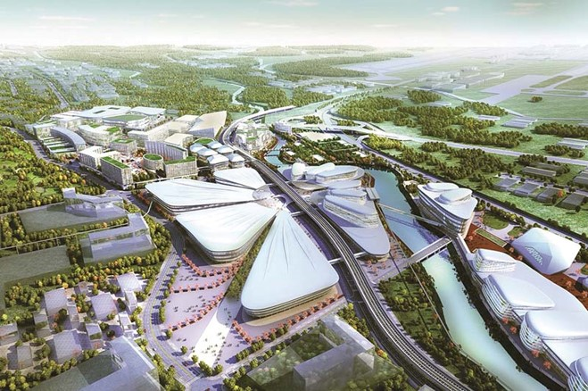
5,000億
鉅額投資
20–30萬
預計創造工作機會
2.3兆
新台幣年營收約 754 億美元
POTENTIAL FUTURE
國門金三角，串起大未來
航空城 × 青埔 × 客運園區
從國際門戶到高鐵樞紐，再到新興宜居生活圈。
大園客運園區，成為連接三大城市發展引擎的重要節點。
CITY
CONNECTION青埔高鐵特區串聯高鐵、商業、休閒與國際級城市機能。
A PLACE TO
LIVE大園客運園區承接城市外溢、產業人口與宜居生活需求。
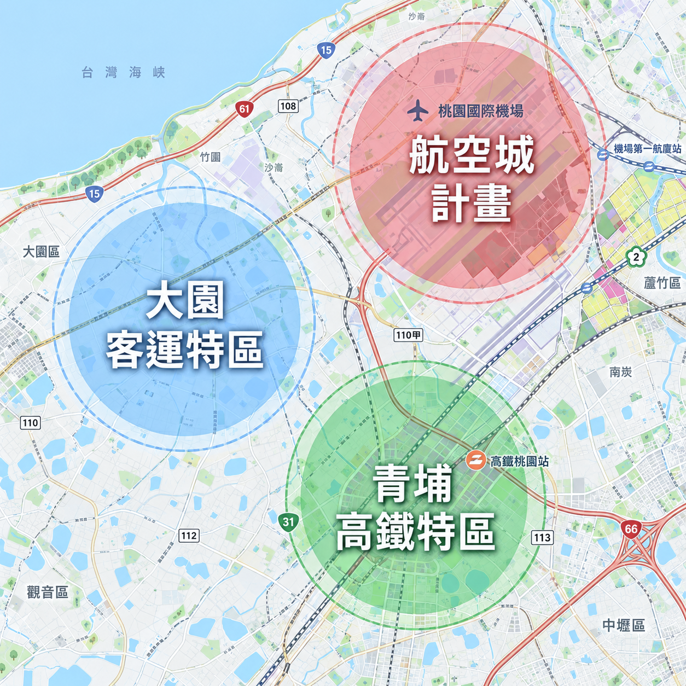
PRIME LOCATION
航空城生活圈，國門軸心地段
桃園國門核心版圖 開啟城市的璀璨篇章
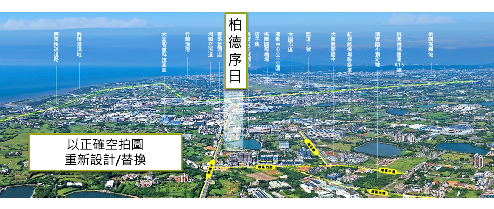
CITY CENTER
接軌國際，同步都心脈動
回家，擁抱城市悠閒繁華
北北桃一小時生活成型，綠意與繁華悠閒隨手得
15分鐘，與國際接軌
桃園機場、桃園航空城、青埔高鐵特區、機捷大園站，迅速抵達
10分鐘，商圈在眼前
全聯、麥當勞、星巴克、寶雅，繁華商圈近近享有
目前先放免版權示意影片；可直接替換成你的 YouTube iframe 或自有 MP4。
Natural View
40 米園科大道首排
雙公園環抱，與自然共居
40米園科大道首排，生活被雙公園環抱
讓樹影、微風與湖景陽光，成為生活最自然的背景
MASTER TEAM
「柏德 × 偉宸」開發建設
深耕城市，預見未來價值
以德立業，以建築致遠
一席建築，是對土地的敬意；一份品質，是對生活的承諾；一種長遠，是對時間的回應。
「柏德 × 偉宸」聯合開發，以德立信，以質築居，不追逐一時的華麗，只追求長久的價值；不只建造一棟房子，更築起一份值得託付的生活。
RESPECT敬土地珍惜土地
創造有價值的建築
創造有價值的建築
QUALITY築品質看不見的細節
更要做到最好
更要做到最好
TIMELESS致長遠打造具備
時間價值的建築
時間價值的建築
MASTER TEAM
億東營造
安全建築的前瞻創造者
以品質構建築，以專業續美好
創造優質生活空間，持續精進施工技術，嚴謹管理每一道工序，用專業與細節，守護對建築的初心。
以 35 年的專業傳承築起建築的骨架，以品質承載生活的重量，讓每一座建築，成為值得長久信賴的生活所在。
35 年專業傳承每一道工序嚴謹管理安全建築前瞻創造者
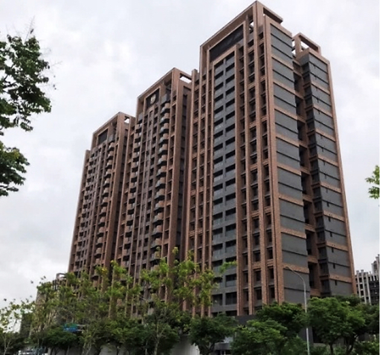
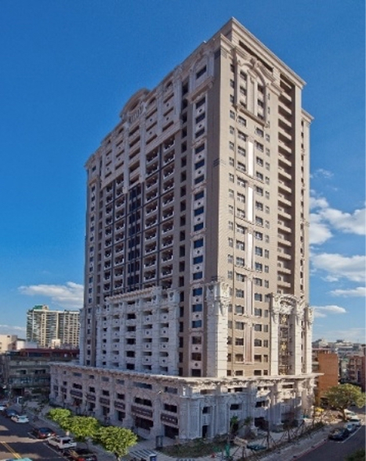
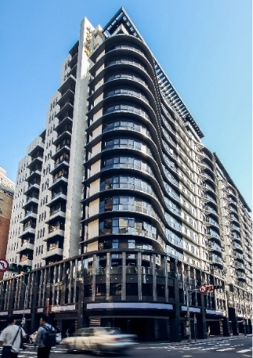
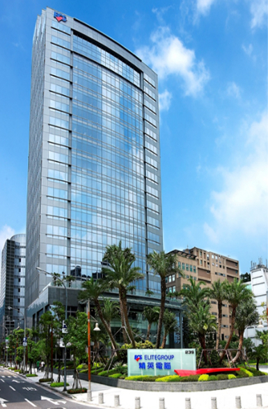
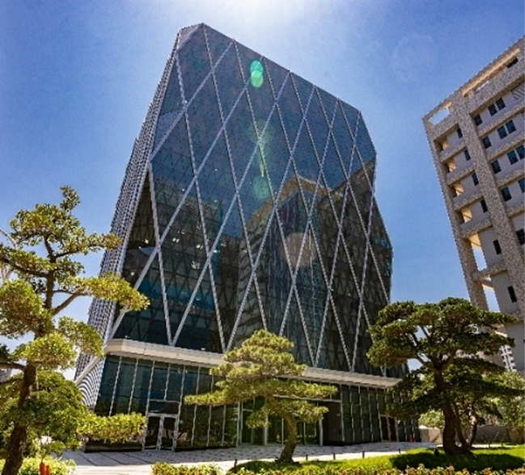
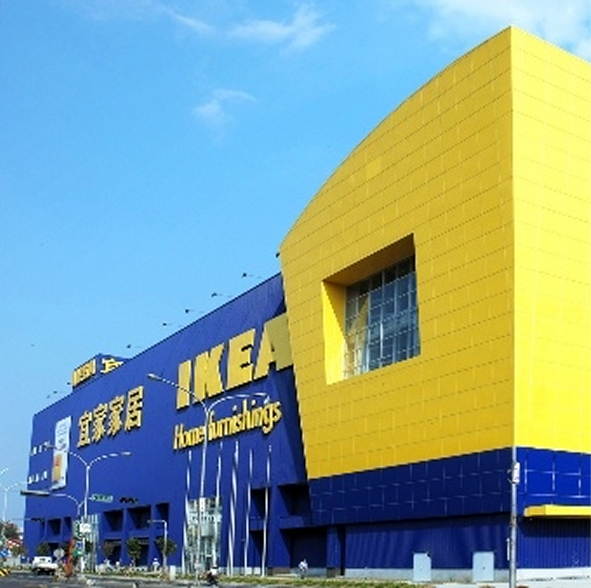
MASTER TEAM
林宗良建築師
永恆與經典的空間構築者
美學與生活的融合
建築不只是鋼筋與水泥的堆疊，而是空間、美學與生活型態的總和。
擅長規劃大型集合社區，作品無數且連年榮獲中華建築金石獎、國家建築金獎等專業獎項。「以人為本，因地制宜」，透過精準的空間感，完美平衡美學創意與實務機能。
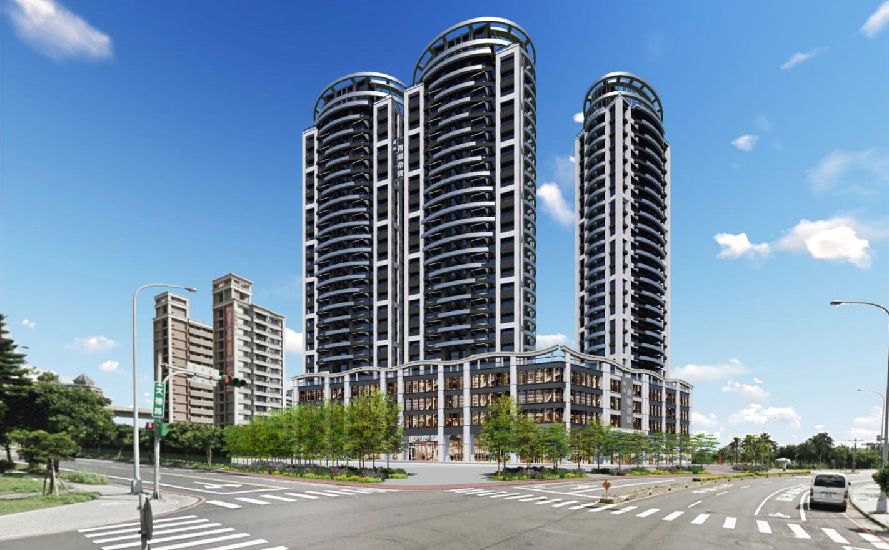
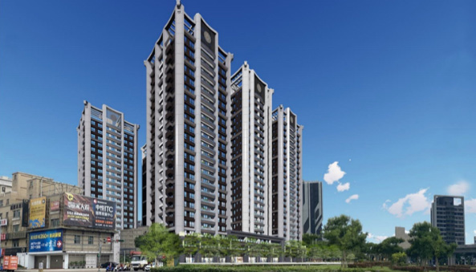
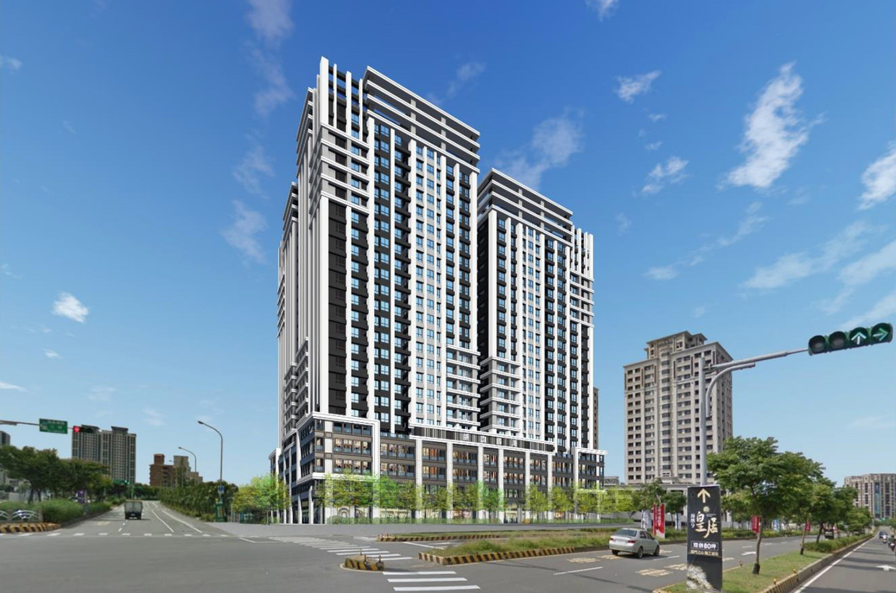
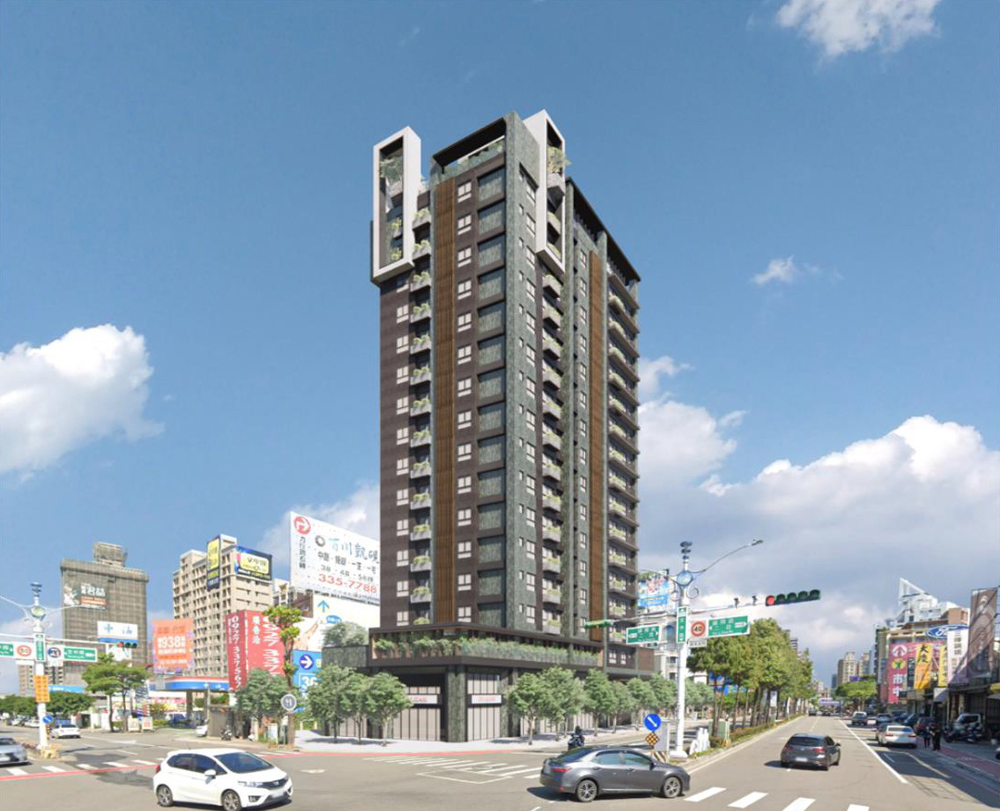
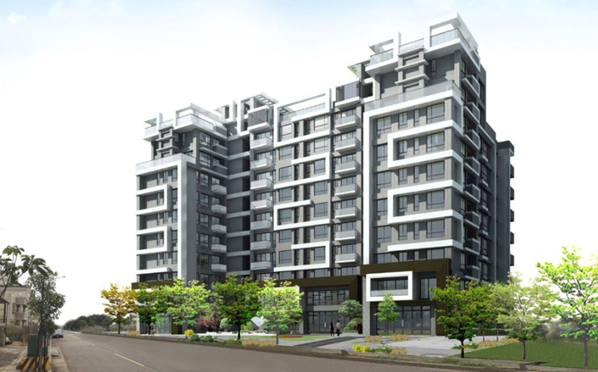
MINIMALIST ARCHITECTURE
簡約有型
是建築，更是精品
簡約，是一種高級的生活態度
以「純粹、留白」為設計語彙
勾勒日式建築與現代都會宅的清爽輪廓。
一抹愛馬仕橘 讓建築有了自己的性格
「愛馬仕橘」運用在建築外觀
如同精品設計中的經典配色，不彰顯卻更耀眼
建築不刻意追求繁複裝飾
我們想呈現的是低調卻雋永鮮明的建築美學
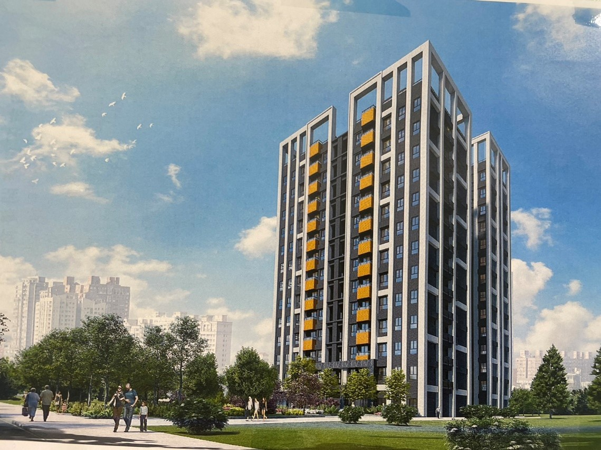
BRILLIANT LIFE
私密花園，從容生活
收藏美好日常
基地退縮 35 米，創造住戶獨享的中庭花園，換取更開闊的綠意與生活視野。
健身房、兒童遊戲區、交誼廳、洗衣房，把生活所需，恰好收藏於社區之中。擁有生活中剛剛好的便利，及屬於自己的綠意與從容。
※ 本頁圖片、影片及文字僅為示意，實際以現場及合約為準。【待填：建案地址／建照字號／廣告企劃】